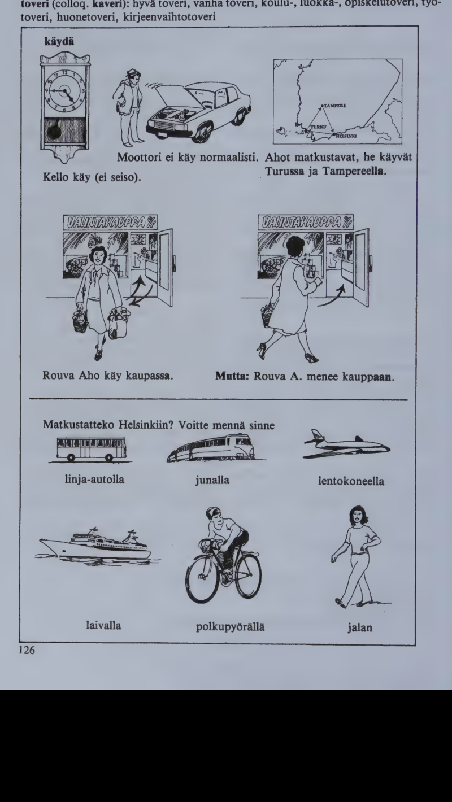

Kappale 27 / Lesson 27#
Viime viikonloppu / Last weekend#
Jussi Salo tapaa Matti Suomelan / Jussi Salo meets Matti Suomela
Suomi |
English |
|---|---|
1. J. Terve, Matti! Mitas sinulle kuuluu? |
1. J. Hello, Matti! How’s everything? |
2. M. Kiitos, ei erikoista. |
2. M. All right, thank you. |
3. J. Miten viikonloppu meni? Olitteko te kaupungissa? |
3. J. How was the weekend? Did you stay in town? |
4. M. Kirsti ja lapset olivat kotona, mutta mina kavin Turussa. |
4. M. Kirsti and the children stayed at home but I went to Turku. |
5. J. Oliko se tyomatka? |
5. J. Was it a business trip? |
6. M. Oli, meilla oli tarkea kokous. Nain paljon vanhoja tuttavia. Soimme yhdessa lounasta, ja meilla oli oikein hauskaa. Mita sina itse teit? |
6. M. Yes, we had an important meeting. I saw many old friends. We had lunch together and had a very good time. What did you do yourself? |
7. J. Minullakin oli mukava viikonloppu. Me kavimme Tampereella. Me lahdimme Helsingista toissapaivana ja tulimme takaisin eilen illalla. |
7. J. I had a nice weekend too. We went to Tampere. We left Helsinki the day before yesterday and came back last night. |
8. M. Oliko tiella paljon liikennetta? |
8. M. Was there much traffic on the road? |
9. J. Ei menomatkalla. Me ajoimme Tampereelle kahdessa ja puolessa tunnissa. Mutta tulomatka kesti kolme ja puoli tuntia. |
9. J. Not on the way there. We drove to Tampere in two and a half hours. But the journey back took three and a half hours. |
10. M. Mita te teitte Tampereella? |
10. M. What did you do in Tampere? |
11. J. Meilla on siella tuttavia. Kavimme heilla. Sitten me katselimme vahan kaupunkia. Lapset olivat ensi kertaa Tampereella. Ja siella on paljon nahtavaa. |
11. J. We’ve got some friends there. We visited them. Then we looked at the city a bit. The children were in Tampere for the first time. And there is a great deal to see. |
12. M. Minakin pidan Tampereesta. Se on siisti ja kaunis, vaikka onkin tehdaskaupunki. Mina kayn siella usein. Ostitteko te jotakin? |
12. M. I like Tampere too. It’s clean and pretty, although it is a factory town. I often go there. Did you buy something? |
13. J. Ei mitaan erikoista. Lapset ostivat pari pienta matkamuistoa. |
13. J. Nothing special. The children bought a couple of little souvenirs. |
meilla meidan talossa, perheessa; meidan maassamme
Voit asua meilla, Timo.
Tulkaa meille kylaan!
Meilla (= Suomessa) ihmiset puhuvat paljon englantia.

Kielioppia / Structural notes#
1. About the Finnish verb types: from basic form to present#
The basic form of verbs in Finnish ends in
Type |
Ending |
Examples |
|---|---|---|
a) |
-da (-da) |
voi/da to be able; tuo/da to bring; jaa/da to remain |
b) |
vowel + a (a) |
puhu/a to speak; anta/a to give; etsi/a to look for |
c) |
-la, -na, -ra (la, -na, -ra); -s + ta (ta) |
tul/la to come; men/na to go; sur/ra to grieve; nous/ta to rise |
d) |
vowel + ta (ta) |
halu/ta to want; ita (-ita); merki/ta to mean |
How to obtain the present tense from the basic form:
voida verbs: Remove the infinitive ending and use the stem as such: voi/da -> voi/n, voi/t, voi etc.
No k p t changes.
puhua verbs: Remove the infinitive ending and use the stem considering the k p t changes: puhu/a -> puhu/n, puhu/t, puhu/u etc., anta/a -> anna/n, anna/t, anta/a etc.
tulla verbs: Remove the infinitive ending and add -e to the stem: tul/la -> tule/n, tule/t, tule/e etc., nous/ta -> nouse/n, nouse/t, nouse/e etc.
k p t changes: strong grade in the whole present tense: ajatel/la to think -> ajattele/n, ajattele/t, ajattele/e etc.
haluta verbs: Remove the infinitive ending and add -a (a) to the stem: halu/ta -> halua/n, halua/t, halua/a etc., vasta/ta to answer -> vastaa/n, vastaa/t, vastaa etc.
k p t changes: strong grade in the whole present tense: tava/ta to meet -> tapaa/n, tapaa/t, tapaa etc.
merki/ta verbs: Remove the infinitive ending and add -tse to the stem: merki/ta -> merkitse/n, merkitse/t, merkitse/e etc.
No k p t changes.
(More about haluta and merkita verbs in 36:4.)
2. Past tense of verbs (affirmative)#
a)#
sano/a to say
Present |
English |
Past |
English |
|---|---|---|---|
(mina) sano/n |
I say |
(mina) sano/i/n |
I said, was saying |
(sina) sano/t |
you say |
(sina) sano/i/t |
you said, were saying |
han sano/o |
he/she says |
han sano/i |
he/she said, was saying |
(me) sano/mme |
we say |
(me) sano/i/mme |
we said, were saying |
(te) sano/tte |
you say |
(te) sano/i/tte |
you said, were saying |
he sano/vat |
they say |
he sano/i/vat |
they said, were saying |
teh/da to do, to make
Present |
English |
Past |
English |
|---|---|---|---|
(mina) tee/n |
I do |
(mina) te/i/n |
I did, was doing |
(sina) tee/t |
you do |
(sina) te/i/t |
you did, were doing |
han teke/e |
he/she does |
han tek/i |
he/she did, was doing |
(me) tee/mme |
we do |
(me) te/i/mme |
we did, were doing |
(te) tee/tte |
you do |
(te) te/i/tte |
you did, were doing |
he teke/vat |
they do |
he tek/i/vat |
they did, were doing |
Questions:
sano/i/ko han? did he/she say?
te/i/tko (sina)? did you do? etc.
Compare the present and the past tense with each other. Note the following points:
The past tense is formed from the present by inserting the past tense marker
-i-between the verb stem and the personal ending;The endings are the same as in the present, except in the 3rd pers. sing., which has no ending;
The past tense marker
-i-may affect changes in the final vowel of the stem. The past tense of each new verb will be given in the vocabularies from now on and may be memorized from there. These changes can also be studied in the chart on p. 131. It is in your interest to familiarize yourself with this reference list as soon as possible. (There is a more detailed chart on the different types of verbs on p. 221.)As for the
k p tchanges, each person in the past tense has the same grade, weak or strong, as the corresponding person in the present tense (seetehdaabove.)
Note, however, that most verbs with the combinations -lt-, -nt-, -rt- in their stem will have -s- all through their past tense:
Verb |
Present |
Past |
|---|---|---|
kielt/a/a to forbid |
kielta/n kielta/t kielt/a/a kielta/mme kielta/tte kielt/a/vat |
kielsi/n kielsi/t kielsi kielsi/mme kielsi/tte kielsi/vat |
tieta/a to know |
tieda/n tieda/t tieta/a tieda/mme tieda/tte tieta/vat |
tiesi/n tiesi/t tiesi tiesi/mme tiesi/tte tiesi/vat |
Similarly also loyta/a to find, pyyta/a to request, tieta/a to know etc.
b)#
haluta verbs have a longer past tense marker -si.
k p t changes are the same as in the present tense.
Present |
Past |
Present |
Past |
|---|---|---|---|
halua/n |
halusi/n |
tapaa/n |
tapasi/n |
halua/t |
halusi/t |
tapaa/t |
tapasi/t |
halua/a |
halusi |
tapaa |
tapasi |
halua/mme |
halusi/mme |
tapaa/mme |
tapasi/mme |
halua/tte |
halusi/tte |
tapaa/tte |
tapasi/tte |
halua/vat |
halusi/vat |
tapaa/vat |
tapasi/vat |
The past tense of the verbs covered in lessons 1-26 can be looked up in the list on p. 132 (following this chapter). (The past tense negative will be introduced in 31:1.)
3. Turussa - Tampereella#
Finnish |
English |
|---|---|
Ingrid asuu Ruotsi/ssa, Ivan Venaja/lla. |
Ingrid lives in Sweden, Ivan in Russia. |
Asun Turu/ssa (Tamperee/lla). |
I live in Turku (Tampere). |
Menkaa Turku/un (Tamperee/lle)! |
Go to Turku (Tampere)! |
Olen tulossa Turu/sta (Tamperee/lta). |
I’m coming from Turku (Tampere). |
With some place-names, outer local cases are used instead of the more common inner local cases.
Almost all foreign place-names are used with inner local cases. An exception to this rule is Venaja Russia.
Among Finnish place-names, most are used like Turku but quite a few are used like Tampere. No rules can be given, as it is the local usage that finally decides whether -ssa or -lla is preferred.
However, the outer local cases are often used if the place name ends in -maki (maen) hill; -niemi (niemen) peninsula, cape, point; -jarvi (jarven) lake; -joki (joen) river; -koski (kosken) rapids, waterfall etc. (that is, words with which the outer local endings are natural: madella on a hill). Examples: Riihi/maki -> Riihi/maella, Rova/niemi -> Rova/niemella, Valkea/koski -> Valkea/koskella, Vantaa/lla (from a river-name).
(Note, however, that names of city districts are mostly used in the inner local cases: Lautta/saaressa, Munkki/niemessa, Kannel/maessa etc.)
Sanasto / Vocabulary#
Finnish |
English |
|---|---|
aja/a ajan ajoi |
to drive; to ride |
erikoi/nen-sta-sen-sia |
special, particular |
hauska: olla hauskaa (mukavaa, kivaa) |
to have fun, a good time; to enjoy oneself |
jo/kin jota/kin (= jotain) jon/kin joita/kin |
some; something |
kesta/a kestan kesti |
to last, take (of time); to stand, endure |
kokous-ta kokouksen kokouksia |
meeting, assembly |
kay/da kayn kavi |
to go; to run, function; to walk; to visit, call on |
kayda jossakin (Suome/ssa, Tamperee/lla) |
to visit some place (Finland, Tampere) |
mutta: tytto kay koulua |
but: the girl attends school, goes to school |
+liikenne-tta liikenteen |
traffic |
matka/muisto-a-n-ja |
souvenir |
miten? (miten/ko?) (= kuinka?) |
how? |
nahtava-a-n nahtavia |
something to see |
siisti-a-n siisteja (# epa/siisti) |
neat, clean |
takaisin |
back |
+tehdas-ta tehtaan tehtaita |
factory, mill, works |
toissa/paivana |
(on) the day before yesterday |
tuttava-a-n tuttavia |
acquaintance, friend |
tarkea-(t)a-n tarkeita |
important |
*
Finnish |
English |
|---|---|
jalan |
on foot |
+joki jokea joen jokia |
river |
kaveri-a-n kavereita (= toveri) |
(colloq.) friend, pal |
kone-tta-en-ita |
machine, engine |
laiva-a-n laivoja |
ship, boat |
lento/kone-tta-en-ita |
airplane |
linja-auto-a-n-ja (= bussi) |
bus |
+maki makea maen makia |
hill |
normaali-a-n normaaleja (# epa/normaali) |
normal |
polku/pyora-a-n-pyoria |
bicycle, bike |
saari saarta saaren saaria |
island, isle |
Appendix / Reference#
Past tense of verbs (affirmative): Vowel changes caused by the past tense marker -i-#
Present stem ends in |
Change |
Present |
Present 3rd |
Past |
Past 3rd |
|---|---|---|---|---|---|
-o, -o, -u, -y |
no change |
katso/n |
katso/o |
katso/i/n |
katso/i |
-e |
e > 0 |
lue/n |
luke/e |
lu/i/n |
luk/i |
-a |
a > 0 in two-syllable verbs if first vowel is a |
maksa/n |
maksa/a |
makso/i/n |
makso/i |
-a |
a > 0 in two-syllable verbs if 1st vowel is not a; in longer verbs |
soita/n |
soitta/a |
soit/i/n |
soitt/i |
-VV |
VV > V |
saa/n |
saa |
sa/i/n |
sa/i |
-ie |
ie > e |
vie/n |
vie |
ve/i/n |
ve/i |
-uo |
uo > o |
juo/n |
juo |
jo/i/n |
jo/i |
-yo |
yo > o |
syo/n |
syo |
so/i/n |
so/i |
-Vi |
i > 0 |
voi/n |
voi |
vo/i/n |
vo/i |
Note:
kayda kayn/kay kavin/kavi
Present and past of -i- verbs are identical except for the 3rd pers. sing.:
Present opin opit oppii opimme opitte oppivat
Past opin opit oppi opimme opitte oppivat
Present and past of -Vi- verbs are entirely identical: voin voit voi voimme voitte voivat.
A list of the verbs in lessons 1-26 by verb types#
1. voida verbs#
juo/da-n joi 14
saa/da-n sai 8
syo/da-n soi 14
tuo/da-n toi 14
vie/da-n vei 15
voi/da-n voi 9
2. puhua verbs#
+aiko/a aion aikoi 13
asu/a-n-i 10
istu/a-n-i 5
katso/a-n-i 9
+kerto/a kerron kertoi 13
kutsu/a-n-i 25
kysy/a-n-i 12
+kaanty/a kaannyn kaantyi 25
+liikku/a liikun liikkui 18
+nukku/a nukun nukkui 24
puhu/a-n-i 3
+saapu/a saavun saapui 26
sano/a-n-i 5
seiso/a-n-i 19
toivo/a-n-i 11
+tayty/a taytyy taytyi 19
+luke/a luen luki 17
+lahte/a lahden lahti 14
muni/a-n muni 22
+oppi/a opin oppi 11
tanssi/a-n tanssi 5
toimi/a-n toimi 18
+lahetta/a lahetan lahetti 17
+naytta/a naytan naytti 22
+pita/a pidan piti 23
+vietta/a vietan vietti 24
+valitta/a valitan valitti 23
+kirjoitta/a kirjoitan kirjoitti 5
matkusta/a-n matkusti 26
muista/a-n muisti 25
+opetta/a opetan opetti 11
osta/a-n osti 7
+otta/a otan otti 5
+soitta/a soitan soitti 5
+anta/a annan antoi 13
+autta/a autan auttoi 23
laula/a-n lauloi 7
maksa/a-n maksoi 7
paina/a-n painoi 16
paista/a-n paistoi 21
+vaihta/a vaihdan vaihtoi 18
+lenta/a lennan lensi 26
+loyta/a loydan loysi 25
+tieta/a tiedan tiesi 6
+tunte/a tunnen tunsi 12
+ymmarta/a ymmarran ymmarsi 7
3. tulla verbs#
+ajatel/la ajattelen ajatteli 19
+esitel/la esittelen esitteli 8
katsel/la katselen katseli 19
kuul/la kuulen kuuli 18
+kuunnel/la kuuntelen kuunteli 24
kavel/la kavelen kaveli 21
luul/la luulen luuli 9
men/na menen meni 7
nous/ta nousen nousi 19
ol/la olen (on) oli 1
opiskel/la opiskelen opiskeli 11
pan/na panen pani 13
tul/la tulen tuli 5
4. haluta verbs and merkita verbs#
halu/ta haluan halusi 7
+leva/ta lepaan lepasi 23
+paka/ta pakkaan pakkasi 26
+tava/ta tapaan tapasi 20
vasta/ta vastaan vastasi 4
merkita verbs
merki/ta merkitsen merkitsi 10
tarvi/ta tarvitsen tarvitsi 21
5. Irregular verbs#
+nah/da naen naki 17
+teh/da teen teki 11